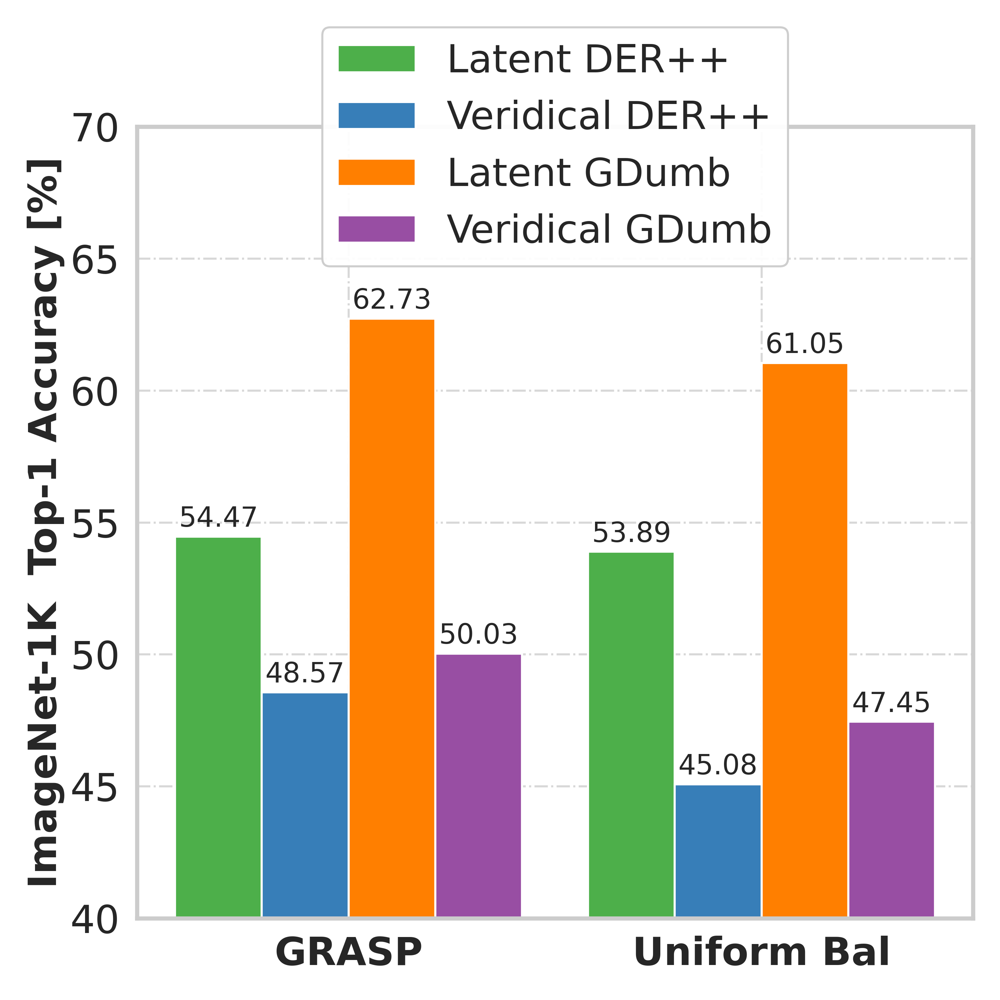

Compute Comparison
GRASP achieves the best accuracy of the uniform balanced policy while requiring 40% fewer gradient descent updates for class incremental learning with SIESTA on ImageNet-1K

Continual learning (CL) in deep neural networks (DNNs) involves incrementally accumulating knowledge in a DNN from a growing data stream. A major challenge in CL is that non-stationary data streams cause catastrophic forgetting of previously learned abilities. A popular solution is rehearsal: storing past observations in a buffer and then sampling the buffer to update the DNN. Uniform sampling in a class-balanced manner is highly effective, and better sample selection policies have been elusive. Here, we propose a new sample selection or rehearsal policy called GRASP (GRAdually Select less Prototypical) that selects the most prototypical (easy) samples first and then gradually selects less prototypical (harder) samples. GRASP has little additional compute or memory overhead compared to uniform selection, enabling it to scale to large datasets. Compared to 17 other rehearsal policies, GRASP achieves higher accuracy in CL experiments on ImageNet. Compared to uniform balanced sampling, GRASP achieves the same performance with 40% fewer updates. We also show that GRASP is effective for CL on five text classification datasets. GRASP has potential to supplant expensive periodic retraining and make on-device CL more efficient.
GRASP achieves the best accuracy of the uniform balanced policy while requiring 40% fewer gradient descent updates for class incremental learning with SIESTA on ImageNet-1K
GRASP matches the best accuracy of the uniform balanced policy while requiring 36% less training time for class incremental learning with SIESTA on ImageNet-1K
GRASP outperforms uniform balanced rehearsal in class incremental learning on ImageNet-1K using SIESTA for both veridical and latent rehearsal settings.
GRASP outperforms uniform balanced in continual IID (independent and identically distributed) experiments on ImageNet-1K using SIESTA and latent rehearsal.
GRASP outperforms other rehearsal policies under varied storage constraints in class incremental learning on ImageNet-300 using SIESTA and latent rehearsal.
GRASP surpasses compared methods under varied compute constraints in class incremental learning on ImageNet-300 using SIESTA and latent rehearsal.
GRASP outperforms uniform balanced rehearsal policy when integrated with various rehearsal-based continual learning methods.
GRASP surpasses uniform balanced policy for both latent and veridical rehearsal with or without buffer constraints when integrated with SIESTA algorithm.

This work was supported in part by NSF awards #1909696, #2326491, and #2125362.
GRASP has been accepted at the Conference on Lifelong Learning Agents (CoLLAs), 2024 🎉
@article{harun2023grasp,
title = {GRASP: A Rehearsal Policy for Efficient Online Continual Learning},
author = {Harun, Md Yousuf and Gallardo, Jhair and Chen, Junyu and Kanan, Christopher},
journal = {arXiv preprint arXiv:2308.13646},
year = {2023}
}